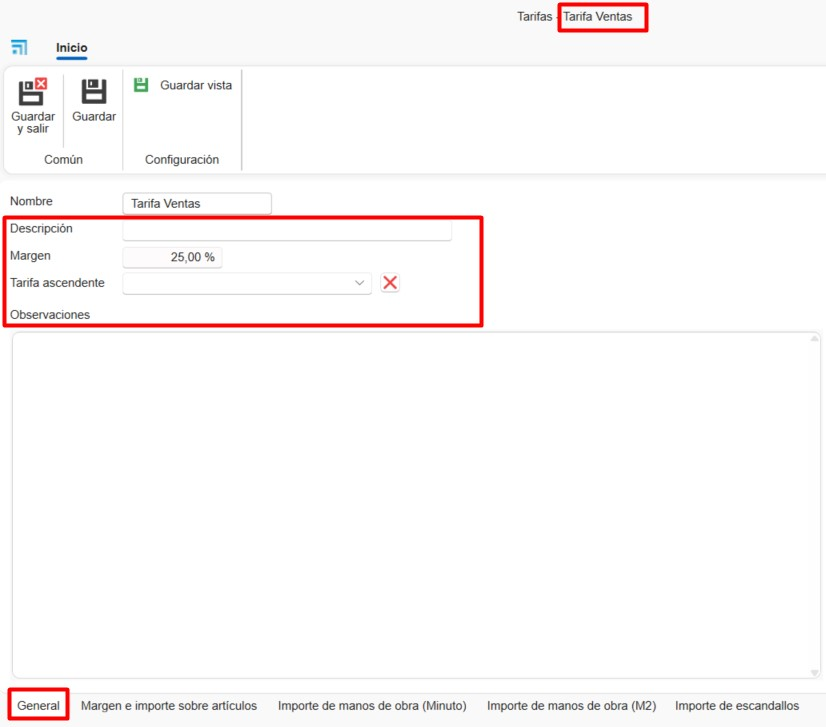

Tarifas y Mano de obra de materiales propios en ENBLAU
1. Introducción
Este manual describe, paso a paso, el uso de las Tarifas y la Mano de obra para la definición de precios de coste y de venta de los materiales en ENBLAU.
2. Crear tarifas
- Desde el apartado Almacenes → Tarifas se accede al listado de tarifas existentes.

- Seleccionar el botón Nueva para crear una nueva tarifa e indicar el nombre correspondiente.

2.1. General
-
En la pestaña General se pueden completar los siguientes campos:
Descripción: Permite añadir una descripción de la tarifa.
Margen: Define el margen que se aplicará sobre la tarifa.
Tarifa ascendente: Indica si la tarifa se basa en otra tarifa existente.
Observaciones: Campo destinado a anotaciones adicionales.

2.2. Margen e importe sobre artículos
- En la pestaña Margen e importe sobre artículos se puede definir el margen y el importe de los artículos arrastrando la referencia final del material desde la pestaña Artículos, situada en la parte derecha de la ventana.
El importe se calculará automáticamente según el tipo de cálculo del artículo: por unidad, metro lineal o metro cuadrado (m²).

2.3. Importe de mano de obra (Minuto)
- En la pestaña Importe de mano de obra (Minuto) se puede definir el coste por minuto arrastrando el concepto de mano de obra desde la pestaña Mano de obra, ubicada en la parte derecha de la ventana.

ℹ️ Nota: La mano de obra debe estar creada previamente en el apartado 3. Crear Mano de obra.
2.4. Importe de mano de obra (m²)
- En la pestaña Importe de mano de obra (m²) se puede definir el importe por metro cuadrado arrastrando el concepto de mano de obra desde la pestaña Mano de obra.

ℹ️ Nota: La mano de obra debe estar creada previamente en el apartado de Mano de obra.
2.5. Importe de escandallos
- En la pestaña Importe de escandallos se puede asignar un importe fijo a un escandallo (grupo de materiales).

ℹ️ Nota: El desglose de materiales seguirá calculándose de forma independiente. El importe del escandallo no tiene por qué coincidir con la suma total estimada de los materiales para venta.
2.6. Listado de tarifas
- Al crear una tarifa, el sistema genera automáticamente otra tarifa con el mismo nombre seguido de + SUE, destinada a materiales sueltos.

- La tarifa de Coste se genera automáticamente y es la tarifa marcada como base de coste para los materiales de ENBLAU.
Esta tarifa no puede eliminarse.

3. Crear mano de obra
- Desde el apartado Almacenes → Tarifas → Mano de obra se accede al listado de manos de obra.

- Se abrirá una ventana desde la que se podrán crear y gestionar diferentes conceptos de mano de obra, completando los siguientes campos:

1. Concepto: Nombre de la mano de obra.
2. Descripción: Descripción opcional del concepto.
3. Tipo: Tipo de mano de obra, seleccionable desde el listado de puestos disponibles en enCONTROL.
4. Es fabricación: Indica si la mano de obra corresponde a fabricación.
5. Es montaje: Indica si la mano de obra corresponde a montaje.

6. Artículos: Permite definir el tiempo de mano de obra (en minutos) para cada artículo, arrastrándolo desde el árbol de Artículos situado a la derecha.
Se puede establecer un rango de unidades (Desde / Hasta) para el material.

7. Escandallos: Permite definir el tiempo de mano de obra (en minutos) para cada escandallo, arrastrándolo desde el árbol de Escandallos situado a la derecha.

 Español
Español
 English
English
 Italiano
Italiano
 Português
Português